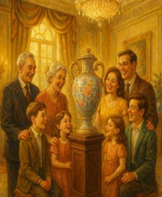
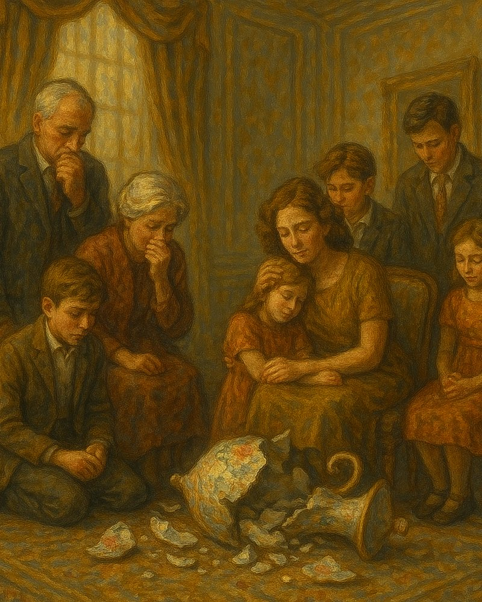
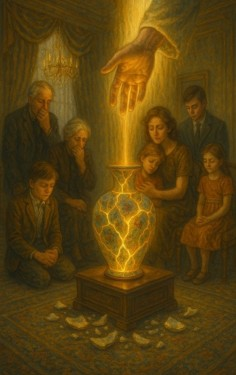
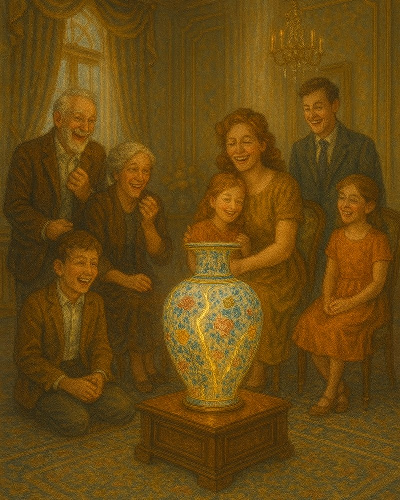

About the books
These books come from the same place as the songs: the pulpit, the prayer room, and the hard seasons in between. The full-length works range from What Happened After the Cross?, which follows the gospel from Calvary into the conversion accounts of Acts, to Untimely, an honest account of a family’s journey through sudden loss, grief, and forgiveness. Alongside them are a 52-week devotional, A Vision of the Harvest, and journeys through Exodus, the story of Balaam, and Israel’s kings.
The booklets and studies were written for the congregation and the Sunday school class: teaching on prayer, baptism in Jesus’ name, the continuing work of the Holy Ghost, marriage, and learning to trust again. Each one opens the Scripture plainly, tells the truth about brokenness, and points to the same God who still restores, still fills, and still speaks.
These works are being prepared for publication. Read a sample from each one while the full editions are finished.
From Untimely · Chapter 11
The Shattered Vase
Before the accident… I had a vision during prayer. A vase. Shattered.
But in the vision, the Lord did something I didn’t expect. He picked up every piece. He didn’t discard the broken. And then I heard it in my spirit: “I can make it better than it was before.”
At the time, I had no idea what it meant. I taught on this in our adult Sunday school, a lesson I will never forget: the blessing is in the brokenness. But on June 14, when Loren left this world… I knew. The vase was us.
He doesn’t always prevent the breaking. But He never wastes the pieces.
Bro. John Kennon

Our family. Our hearts. Our plans.
Shattered. But not thrown away.
He picked up every piece.
“I can make it better than it was before.”
Books
Booklets & studies
From the family
Bro. John’s daughter
Grace Stacks
Grace has written two works of her own: a letter to her younger self about loss, faith, and finding her way back to hope, and a hand-lettered devotional of Scripture, prayers, and notes of faith. We are proud to share them here.